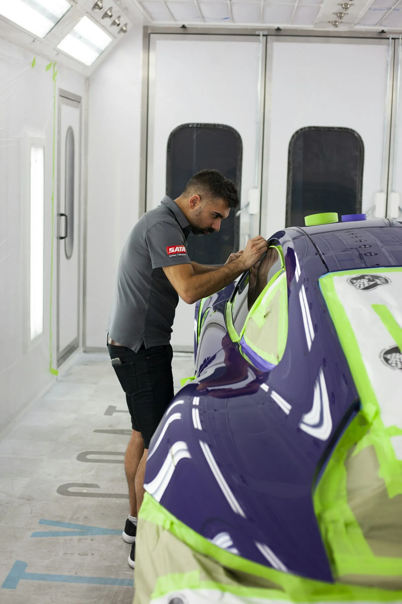
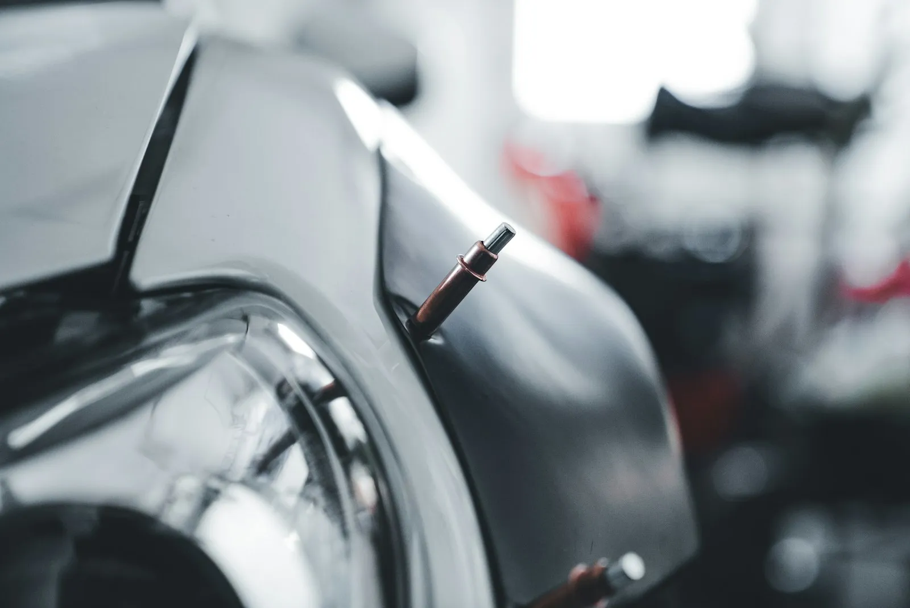
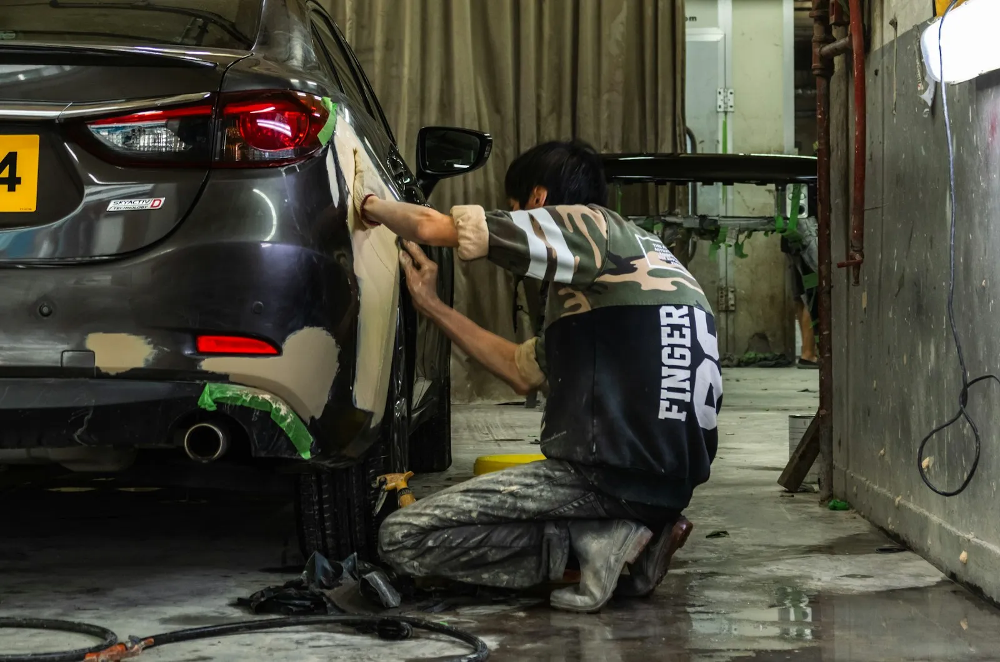
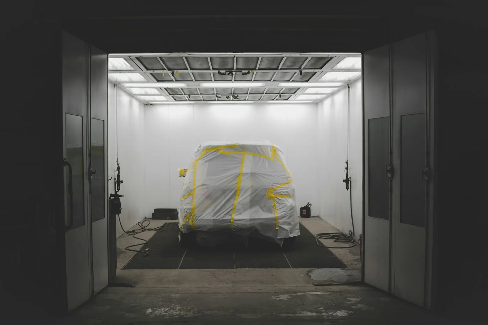
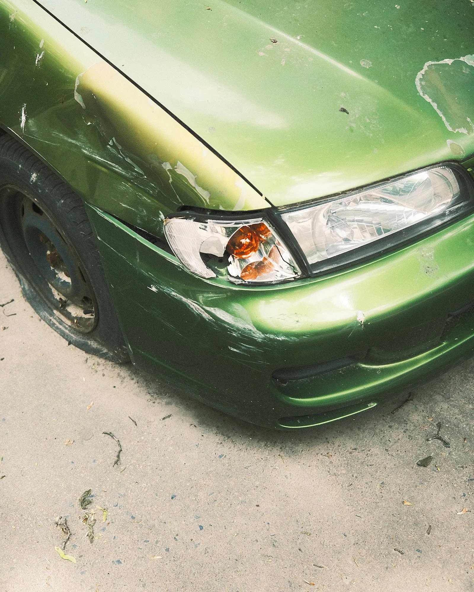

Bodyworks Carrosserie aan de Rijksweg in Zulte herstelt deuken, krassen en schade na een aanrijding. Grondig voorbereid, netjes gespoten, en afgewerkt tot je niet meer ziet waar het was.
Klik door de herstellingen. Twijfel je wat je nodig hebt, stuur dan een foto. Dan hoor je eerlijk wat zin heeft.

Geen prijsofferte, wel een eerlijke eerste inschatting van wat er waarschijnlijk moet gebeuren. Voor een prijs bekijken we je wagen altijd zelf.
Een goede herstelling zit vooral in de voorbereiding. Daar wordt geen tijd op bespaard.
Je toont de schade. We kijken wat eronder zit en zeggen je wat nodig is, en wat niet.
Uitdeuken, plamuren of een deel vervangen. Daarna wordt alles strak geschuurd.
De kleur wordt afgestemd op je wagen en in lagen gespoten, zodat de overgang onzichtbaar is.
Polijsten, alles terug monteren en een laatste controle in het licht. Dan pas krijg je je sleutels terug.



Gemiddeld vijf op vijf, uit 16 reviews op Google.
Vul kort in wat er is. Je bericht opent in WhatsApp, zodat je er meteen foto's bij kan zetten.
Vaak wel, als de lak niet beschadigd is. Dan wordt de deuk van achteren of met speciaal gereedschap teruggezet. Stuur een foto, dan zeggen we of het kan.
De kleur wordt afgestemd op je wagen en in de aangrenzende delen uitgevloeid. Zo zie je geen verschil tussen het herstelde stuk en de rest.
Dat hangt af van je polis en van wat er gebeurd is. Breng de gegevens van je verzekering mee, dan bekijken we samen wat het handigst is.
Een kleine deuk kan snel gaan. Bij grotere schade moet de lak ook drogen en uitharden. Je hoort vooraf hoeveel dagen je wagen ongeveer bij ons staat.
Ik maakte deze demo voor jullie om te tonen wat er kan. Na een kort gesprek maak ik er iets veel persoonlijkers van, helemaal naar jullie wens.
Vrijblijvend. Ik kom langs of we bellen.
Op maat, op jullie eigen domein.
Geen voorschot. Jullie betalen pas als alles klaar is.
Hosting, domeinnaam en kleine wijzigingen, zoals nieuwe openingsuren.
Omdat een voorbeeld meer zegt dan een mail. Zo zien jullie meteen wat er kan, en het kost jullie niets.
Nee. Het gesprek is vrijblijvend. Vinden jullie het niks, dan is het daarmee gedaan.
Na ons gesprek staat jullie site binnen 10 tot 14 dagen online.
Zeker. Jullie domeinnaam kan gewoon blijven, de nieuwe site komt in de plaats van de oude.
Nee, dat doe ik op basis van ons gesprek. Eigen foto's zijn mooi meegenomen, maar niet nodig om te starten.